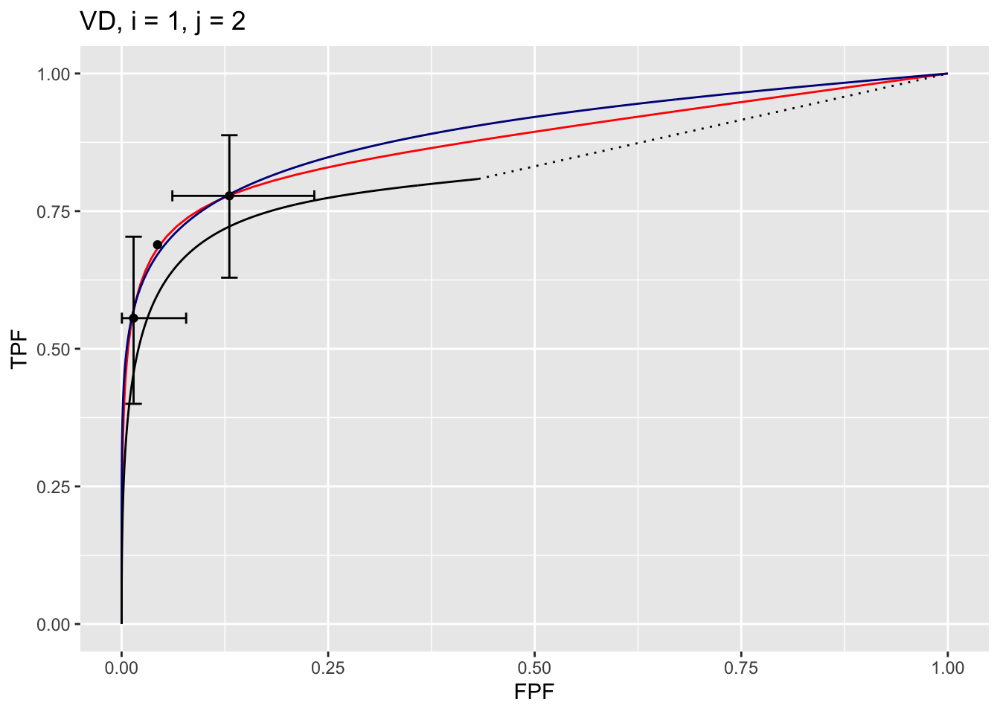
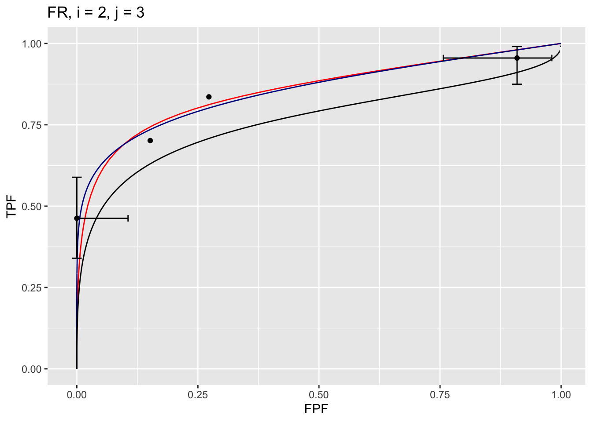

Chapter 12 Three proper ROC fits
12.1 TBA How much finished
75%
12.2 Introduction
A proper ROC curve is one whose slope decreases monotonically as the operating point moves up the curve, a consequence of which is that a proper ROC does not display an inappropriate chance line crossing followed by a sharp upward turn, i.e., a “hook”, usually near the (1,1) upper right corner.
There are three methods for fitting proper curves to ROC datasets:
- The radiological search model (RSM) described in Chapter 11,
- The PROPROC (proper ROC) and CBM (contaminated binormal model) described in TBA Chapter 20.
This chapter compares these methods for a number of datasets. Comparing the RSM to the binormal model would be inappropriate, as the latter does not predict proper ROCs.
12.3 Applications
The RSM, PROPROC and CBM algorithms were applied to the 14 embedded datasets described in 12.11. The datasets have already been analyzed and the location of pre-analyzed results files are in 12.13.
datasetNames <- c("TONY", "VD", "FR",
"FED", "JT", "MAG",
"OPT", "PEN", "NICO",
"RUS", "DOB1", "DOB2",
"DOB3", "FZR")In the following we focus on just two ROC datasets, which have been widely used in the literature to illustrate ROC methodological advances, namely the Van Dyke (VD) and the Franken (FR) datasets.
12.3.1 Application to two datasets
- The code uses the function
Compare3ProperRocFits(). - The code file is
R/compare-3-fits/Compare3ProperRocFits.R. startIndxis the firstindexto analyze andendIndxis the last.- In the current example
startIndx = 2andendIndx = 3; i.e., two datasets are analyzed corresponding todatasetNames[2]anddatasetNames[3], i.e., the VD and FR datasets.32 reAnalyzeis set toFALSEcausing pre-analyzed results (to be found in directoryR/compare-3-fits/RSM6) to be retrieved. IfreAnalyzeisTRUEthe analysis is repeated, leading to possibly slightly different results (the maximum likelihood parameter-search algorithm has inherent randomness aimed at avoiding finding false local maxima).- The fitted parameter results are contained in
ret$allResultsand the composite plots (i.e., 3 combined plots corresponding to the three proper ROC fitting algorithms) are contained inret$allPlots. - These are saved to lists
plotArrandresultsArr.
startIndx <- 2
endIndx <- 3
ret <- Compare3ProperRocFits(datasetNames,
startIndx = startIndx,
endIndx = endIndx,
reAnalyze = FALSE)
resultsArr <- plotArr <- array(list(),
dim = c(endIndx - startIndx + 1))
for (f in 1:(endIndx-startIndx+1)) {
plotArr[[f]] <- ret$allPlots[[f]]
resultsArr[[f]] <- ret$allResults[[f]]
}We show next how to display the composite plots.
12.4 Displaying composite plots
- The
plotArrlist contains plots for the two datasets. The Van Dyke plots are inplotArr[[1]]and the Franken inplotArr[[2]]. - The Van Dyke plots contain \(I \times J = 2 \times 5 = 10\) composite plots, and similarly for the Franken dataset (both datasets consist of 2 treatments and 5 readers).
- The following shows how to display the composite plot for the Van Dyke dataset for treatment 1 and reader 2.

The plot is labeled D2, i = 1, j = 2, meaning the second dataset, the first treatment and the second reader. It contains 3 curves:
- The RSM fitted curve is in black. It is the only one with a dotted line connecting the uppermost continuously accessible operating point to (1,1).
- The PROPROC fitted curve is in red.
- The CBM fitted curve is in blue.
- Three operating points from the binned data are shown as well as exact 95% confidence intervals for the lowest and uppermost operating points.
The following example displays the composite plots for the Franken dataset, treatment 2 and reader 3:

Shown next is how to display the parameters corresponding to the fitted curves.
12.5 Displaying RSM parameters
The RSM has parameters: \(\mu\), \(\lambda'\), \(\nu'\) and \(\zeta_1\). The parameters corresponding to the RSM plots are accessed as shown next.
resultsArr[[1]][[2]]$retRsm$muis the RSM \(\mu\) parameter for dataset 1 (i.e., Van Dyke dataset), treatment 1 and reader 2,resultsArr[[1]][[2]]$retRsm$lambdaPis the corresponding \(\lambda'\) parameter, and
resultsArr[[1]][[2]]$retRsm$nuPis the corresponding \(\nu'\) parameter.resultsArr[[1]][[2]]$retRsm$zeta1is the corresponding \(\zeta_1\) parameter.- Treatment 2 and reader 1 values would be accessed as
resultsArr[[1]][[6]]$retRsm$mu, etc. - More generally the values are accessed as
[[f]][[(i-1)*J+j]], wherefis the dataset index,iis the treatment index,jis the reader index andJis the total number of readers. - For the Van Dyke dataset
f = 1and for the Franken datasetf = 2.
The first example displays RSM parameters for the Van Dyke dataset, treatment 1 and reader 2:
f <- 1;i <- 1; j <- 2;J <- 5
cat("RSM parameters, Van Dyke Dataset, treatment 1, reader 2:",
"\nmu = ", resultsArr[[f]][[(i-1)*J+j]]$retRsm$mu,
"\nlambdaP = ", resultsArr[[f]][[(i-1)*J+j]]$retRsm$lambdaP,
"\nnuP = ", resultsArr[[f]][[(i-1)*J+j]]$retRsm$nuP,
"\nzeta_1 = ", as.numeric(resultsArr[[f]][[(i-1)*J+j]]$retRsm$zetas[1]),
"\nAUC = ", resultsArr[[f]][[(i-1)*J+j]]$retRsm$AUC,
"\nsigma_AUC = ", as.numeric(resultsArr[[f]][[(i-1)*J+j]]$retRsm$StdAUC),
"\nNLLini = ", resultsArr[[f]][[(i-1)*J+j]]$retRsm$NLLIni,
"\nNLLfin = ", resultsArr[[f]][[(i-1)*J+j]]$retRsm$NLLFin)## RSM parameters, Van Dyke Dataset, treatment 1, reader 2:
## mu = 2.201413
## lambdaP = 0.2569453
## nuP = 0.7524016
## zeta_1 = -0.1097901
## AUC = 0.8653694
## sigma_AUC = 0.04740562
## NLLini = 96.48516
## NLLfin = 85.86244The next example displays RSM parameters for the Franken dataset, treatment 2 and reader 3:
## RSM parameters, Franken dataset, treatment 2, reader 3:
## mu = 3.287996
## lambdaP = 9.371198
## nuP = 0.7186006
## zeta_1 = 1.646943
## AUC = 0.8234519
## sigma_AUC = 0.04054005
## NLLini = 128.91
## NLLfin = 122.4996The first four values are the fitted values for the RSM parameters \(\mu\), \(\lambda'\), \(\nu'\) and \(\zeta_1\). The next value is the AUC under the fitted RSM curve followed by its standard error. The last two values are the initial and final values of negative log-likelihood.33
12.6 Displaying CBM parameters
CBM has parameters \(\mu_{CBM}\), \(\alpha\) and \(\zeta_1\). The next example displays CBM parameters and AUC etc. for the Van Dyke dataset, treatment 1 and reader 2:
f <- 1;i <- 1; j <- 2;J <- 5
cat("CBM parameters, Van Dyke Dataset, treatment 1, reader 2:",
"\nmu = ", resultsArr[[f]][[(i-1)*J+j]]$retCbm$mu,
"\nalpha = ", resultsArr[[f]][[(i-1)*J+j]]$retCbm$alpha,
"\nzeta_1 = ", as.numeric(resultsArr[[f]][[(i-1)*J+j]]$retCbm$zetas[1]),
"\nAUC = ", resultsArr[[f]][[(i-1)*J+j]]$retCbm$AUC,
"\nsigma_AUC = ", as.numeric(resultsArr[[f]][[(i-1)*J+j]]$retCbm$StdAUC),
"\nNLLini = ", resultsArr[[f]][[(i-1)*J+j]]$retCbm$NLLIni,
"\nNLLfin = ", resultsArr[[f]][[(i-1)*J+j]]$retCbm$NLLFin)## CBM parameters, Van Dyke Dataset, treatment 1, reader 2:
## mu = 2.745791
## alpha = 0.7931264
## zeta_1 = 1.125028
## AUC = 0.8758668
## sigma_AUC = 0.03964492
## NLLini = 86.23289
## NLLfin = 85.88459The next example displays CBM parameters for the Franken dataset, treatment 2 and reader 3:
## CBM parameters, Franken dataset, treatment 2, reader 3:
## mu = 2.533668
## alpha = 0.6892561
## zeta_1 = 0.3097191
## AUC = 0.8194009
## sigma_AUC = 0.03968962
## NLLini = 122.6812
## NLLfin = 122.5604The first three values are the fitted values for the CBM parameters \(\mu\), \(\alpha\) and \(\zeta_1\). The next value is the AUC under the fitted CBM curve followed by its standard error. The last two values are the initial and final values of negative log-likelihood.
12.7 Displaying PROPROC parameters
PROPROC displayed parameters are \(c\) and \(d_a\). The next example displays PROPROC parameters for the Van Dyke dataset, treatment 1 and reader 2:
f <- 1;i <- 1; j <- 2;J <- 5
cat("PROPROC parameters, Van Dyke Dataset, treatment 1, reader 2:",
"\nc = ", resultsArr[[f]][[(i-1)*J+j]]$c1,
"\nd_a = ", resultsArr[[f]][[(i-1)*J+j]]$da,
"\nAUC = ", resultsArr[[f]][[(i-1)*J+j]]$aucProp)## PROPROC parameters, Van Dyke Dataset, treatment 1, reader 2:
## c = -0.2809004
## d_a = 1.731472
## AUC = 0.8910714The values are identical to those listed for treatment 1 and reader 2 in Fig. 12.7. Other statistics, such as standard error of AUC, are not provided by PROPROC software.
The next example displays PROPROC parameters for the Franken dataset, treatment 2 and reader 3:
## PROPROC parameters, Franken dataset, treatment 2, reader 3:
## c = -0.4420007
## d_a = 0.9836615
## AUC = 0.8252824All 10 composite plots for the Van Dyke dataset are shown in the Appendix to this chapter, 12.14.
The next section provides an overview of the most salient findings from analyzing the datasets.
12.8 Overview of findings
With 14 datasets the total number of individual modality-reader combinations is 236: in other words, there are 236 datasets to each of which three algorithms were applied. It is easy to be overwhelmed by the numbers and this section summarizes the most important conclusion: for each dataset, treatment and reader, the three fitting methods are consistent with a single method-independent AUC.
If the AUCs of the three methods are identical the following relations hold with slopes equal to unity:
\[\begin{equation} \left. \begin{aligned} AUC_{PRO} =& m_{PR} AUC_{PRO} \\ AUC_{CBM} =& m_{CR} AUC_{PRO} \\ m_{PR} =& 1 \\ m_{CR} =& 1 \end{aligned} \right \} \tag{12.1} \end{equation}\]
The abbreviations are as follows:
- PRO = PROPROC
- PR = PROPROC vs. RSM
- CR = CBM vs. RSM.
For each dataset the plot of PROPROC AUC vs. RSM AUC should be linear with zero intercept and slope \(m_{PR}\). The reason for the zero intercept is that if one of the AUCs indicates zero performance the other AUC must also be zero. Likewise, chance level performance (AUC = 0.5) must be common to all method of estimating AUC. Finally, perfect performance must be common to all methods. All of these conditions require a zero-intercept linear fit.
12.8.1 Slopes
Denote PROPROC AUC for dataset \(f\), treatment \(i\) and reader \(j\) by \(\theta^{PRO}_{fij}\). Likewise, the corresponding RSM and CBM values are denoted by \(\theta^{RSM}_{fij}\) and \(\theta^{CBM}_{fij}\), respectively. For a given dataset the slope of the PROPROC values vs. the RSM values is denoted \(m_{PR,f}\). The (grand) average over all datasets is denoted \(m^{PR}_\bullet\). Likewise, the average of the CBM AUC values vs. the RSM value is denoted \(m^{CR}_\bullet\).
An analysis was conducted to determine the average slopes and a bootstrap analysis was conducted to determine the corresponding confidence intervals.
The code for calculating the average slopes is in R/compare-3-fits/slopesConvVsRsm.R and that for calculating the bootstrap confidence intervals is in R/compare-3-fits/slopesAucsConvVsRsmCI.R.
The call to function slopesConvVsRsm() returns ret, which contains, for each of 14 datasets, two plots and two slopes. For example:
ret$p1[[2]]is the plot of \(\theta^{PRO}_{2ij}\) vs. \(\theta^{RSM}_{2ij}\) for the Van Dyke dataset.ret$p2[[2]]is the plot of \(\theta^{CBM}_{2ij}\) vs. \(\theta^{RSM}_{2ij}\) for the Van Dyke dataset.ret$m_pro_rsmhas two columns, each of length 14, the slopes \(m_{PR,f}\) for the datasets (indexed byf) and the corresponding \(R^2\) values. The first column isret$m_pro_rsm[[1]]and the second isret$m_pro_rsm[[2]].ret$m_cbm_rsmhas two columns, each of length 14, the slopes \(m_{CR,f}\) for the datasets and the corresponding \(R^2\) values.
Likewise,
ret$p1[[3]]is the plot of \(\theta^{PRO}_{3ij}\) vs. \(\theta^{RSM}_{3ij}\) for the Franken dataset.ret$p2[[3]]is the plot of \(\theta^{CBM}_{3ij}\) vs. \(\theta^{RSM}_{3ij}\) for the Franken dataset.
As examples, ret$p1[[2]] is the plot of \(\theta^{PRO}_{2ij}\) vs. \(\theta^{RSM}_{2ij}\) for the Van Dyke dataset and ret$p1[[3]] is the plot of \(\theta^{CBM}_{2ij}\) vs. \(\theta^{RSM}_{2ij}\) for the Van Dyke dataset, shown next. Each plot has the constrained linear fit superposed on the data points; each data point represents a distinct modality-reader combination.
FIGURE 12.1: Van Dyke dataset: Left plot is PROPROC-AUC vs. RSM-AUC with the superposed constrained linear fit. The number of data points is nPts = 10. Right plot is CBM-AUC vs. RSM-AUC.
The next plot shows corresponding plots for the Franken dataset.
FIGURE 12.2: Similar to previous plot, for Franken dataset.
The average slopes and \(R^2\) values (\(R^2\) is the fraction of variance explained by the constrained straight line fit) are listed in Table 12.1.
The slopes and \(R^2\) values for the Van Dyke dataset are shown next:
## m-PR R2-PR m-CR R2-CR
## VD 1.006127 0.999773 1.000699 0.999983212.8.2 Confidence intervals
The call to slopesAucsConvVsRsmCI returns retCI, containing the results of the bootstrap analysis (note the bullet symbols \(\bullet\) denoting averages over 14 datasets):
retCI$cislopeProRsmconfidence interval for \(m^{PR}_\bullet\)retCI$cislopeCbmRsmconfidence interval for \(m^{CR}_\bullet\)retCI$histSlopeProRsmhistogram plot for 200 bootstrap values of \(m^{PR}_\bullet\)retCI$histSlopeCbmRsmhistogram plot for 200 bootstrap values of \(m^{CR}_\bullet\)retCI$ciAvgAucRsmconfidence interval for 200 bootstrap values of \(\theta^{RSM}_\bullet\)retCI$ciAvgAucProconfidence interval for 200 bootstrap values of \(\theta^{PRO}_\bullet\)retCI$ciAvgAucCbmconfidence interval for 200 bootstrap values of \(\theta^{CBM}_\bullet\)
As examples,
## m-PR m-CR
## 2.5% 1.005092 0.9919886
## 97.5% 1.012285 0.9966149The CI for \(m^{PR}_\bullet\) is slightly above unity, while that for \(m^{CR}_\bullet\) is slightly below. Shown next is the histogram plot for \(m^{PR}_\bullet\) (left plot) and \(m^{CR}_\bullet\) (right plot). Quantiles of these histograms were used to compute the confidence intervals cited above.
FIGURE 12.3: Histograms of slope PROPROC AUC vs. RSM AUC (left) and slope CBM AUC vs. RSM AUC (right).
12.8.3 Summary of slopes and confidence intervals
| \(m_{PR}\) | \(R^2_{PR}\) | \(m_{CR}\) | \(R^2_{CR}\) | |
|---|---|---|---|---|
| TONY | 1.0002 | 0.9997 | 0.9933 | 0.9997 |
| VD | 1.0061 | 0.9998 | 1.0007 | 1 |
| FR | 0.9995 | 1 | 0.9977 | 1 |
| FED | 1.0146 | 0.9998 | 0.9999 | 0.9999 |
| JT | 0.9964 | 0.9995 | 0.9972 | 1 |
| MAG | 1.036 | 0.9983 | 0.9953 | 1 |
| OPT | 1.0184 | 0.9997 | 1.0059 | 0.9997 |
| PEN | 1.0081 | 0.9996 | 0.9976 | 1 |
| NICO | 0.9843 | 0.9998 | 0.997 | 1 |
| RUS | 0.9989 | 0.9999 | 0.9921 | 0.9999 |
| DOB1 | 1.0262 | 0.9963 | 0.9886 | 0.9962 |
| DOB2 | 1.0056 | 0.9987 | 0.971 | 0.9978 |
| DOB3 | 1.0211 | 0.998 | 0.9847 | 0.9986 |
| FZR | 1.0027 | 0.9999 | 0.9996 | 1 |
| AVG | 1.0084 | 0.9992 | 0.9943 | 0.9994 |
| CI | (1.005, 1.012) | NA | (0.992, 0.997) | NA |
Table 12.1: The first column, labeled \(m_{PR}\), shows results of fitting straight lines, constrained to go through the origin, to fitted PROPROC AUC vs. RSM AUC results, for each of the 14 datasets, as labeled. The second column, labeled \(R^2_{PR}\), lists the square of the correlation coefficient for each fit. The third and fourth columns list the corresponding values for the CBM AUC vs. RSM AUC fits. The second last row lists the averages (AVG) and the last row lists the 95 percent confidence intervals (CI) for the average slopes.
12.9 Discussion / Summary
Over the years, there have been several attempts at fitting FROC data. Prior to the RSM-based ROC curve approach described in this chapter, all methods were aimed at fitting FROC curves, in the mistaken belief that this approach was using all the data. The earliest was my FROCFIT software TBA 36. This was followed by Swensson’s approach37, subsequently shown to be equivalent to my earlier work, as far as predicting the FROC curve was concerned TBA 11. In the meantime, CAD developers, who relied heavily on the FROC curve to evaluate their algorithms, developed an empirical approach that was subsequently put on a formal basis in the IDCA method12.
This chapter describes an approach to fitting ROC curves, instead of FROC curves, using the RSM. Fits were described for 14 datasets, comprising 236 distinct treatment-reader combinations. All fits and parameter values are viewable in the online “Supplemental Material” directory corresponding to this chapter. Validity of fit was assessed by the chisquare goodness of fit p-value; unfortunately using adjacent bin combining this could not be calculated in most instances; ongoing research at other ways of validating the fits is underway. PROPROC and CBM were fitted to the same datasets, yielding further validation and insights. One of the insights was the finding that the AUCS were almost identical, with PROPROC yielding the highest value, followed by CBM and closely by the RSM. The PROPROC-AUC / CBM-AUC, vs. RSM-AUC straight-line fits, constrained to go through the origin, had slopes 1.0255 (1.021, 1.030) and 1.0097 (1.006, 1.013), respectively. The \(R^2\) values were generally in excess of 0.999, indicative of excellent fits.
On the face of it, fitting the ROC curve seems to be ignoring much of the data. As an example, the ROC rating on a non-diseased case is the rating of the highest-rated mark on that image, or negative infinity if the case has no marks. If the case has several NL marks, only the highest rated one is used. In fact the highest rated mark contains information about the other marks on the case, namely they were all rated lower. There is a statistical term for this, namely sufficiency38. As an example, the highest of a number of samples from a uniform distribution is a sufficient statistic, i.e., it contains all the information contained in the observed samples. While not quite the same for normally distributed values, neglect of the NLs rated lower is not as bad as might seem at first. A similar argument applies to LLs and NLs on diseased cases. The advantage of fitting to the ROC is that the coupling of NLs and LLs on diseased cases breaks the degeneracy problem described in §18.2.3.
The reader may wonder why I chose not to fit the wAFROC TBA. After all, it is the recommended figure of merit for FROC studies. While the methods described in this chapter are readily adapted to the wAFROC, they are more susceptible to degeneracy issues. The reason is that the y-axis is defined by LL-events, in other words by the parameters, while the x-axis is defined by the highest rated NL on non-diseased cases, in other words by the parameter. The consequent decoupling of parameters leads to degeneracy of the type described in §18.2.3. This is avoided in ROC fitting because the y-axis is defined by LLs and NLs, in other words all parameters of the RSM are involved. The situation with the wAFROC is not quite as severe as with fitting FROC curves but it does have a problem with degeneracy. There are some ideas on how to improve the fits, perhaps by simultaneously fitting ROC and wAFROC-operating points, which amounts to putting constraints on the parameters, but for now this remains an open research subject. Empirical wAFROC, which is the current method implemented in RJafroc, is expected to have the same issues with variability of thresholds between treatments as the empirical ROC-AUC, as discussed in §5.9. So the fitting problem has to be solved. There is no need to fit the FROC, as it should never be used as a basis of a figure of merit for human observer studies; this is distinct from the severe degeneracy issues encountered with fitting it for human observers.
The application to a large number (236) of real datasets revealed that PROPROC has serious issues. These were apparently not revealed by the millions of simulations used to validate it39. To quote the cited reference, “The new algorithm never failed to converge and produced good fits for all of the several million datasets on which it was tested”. This is a good illustration of why simulations studies are not a good alternative to the method described in §18.5.1.3. In my experience this is a common misconception in this field, and is discussed further in the following chapter. Fig. 18.5, panels (J), (K) and (L) show that PROPROC, and to a lesser extent CBM, can, under some circumstances, severely overestimate performance. Recommendations regarding usage of PROPROC and CBM are deferred to Chapter 20.
The current ROC-based effort led to some interesting findings. The near equality of the AUCs predicted by the three proper ROC fitting methods, summarized in Table 18.4, has been noted, which is explained by the fact that proper ROC fitting methods represent different approaches to realizing an ideal observer, and the ideal observer must be unique, §18.6.
This chapter explores what is termed inter-correlations, between RSM and CBM parameters. Since they have similar physical meanings, the RSM and CBM separation parameters were found to be significantly correlated, = 0.86 (0.76, 0.89), as were the RSM and CBM parameters corresponding to the fraction of lesions that was actually visible, = 0.77 (0.68, 0.82). This type of correspondence between two different models can be interpreted as evidence of mutually reinforcing validity of each of the models.
The CBM method comes closest to the RSM in terms of yielding meaningful measures, but the fact that it allows the ROC curve to go continuously to (1,1) implies that it is not completely accounting for search performance, §17.8. There are two components to search performance: finding lesions and avoiding non-lesions. The CBM model accounts for finding lesions, but it does not account for avoiding suspicious regions that are non-diseased, an important characteristic of expert radiologists.
An important finding is the inverse correlation between search performance and lesion-classification performance, which suggest there could be tradeoffs in attempts to optimize them. As a simplistic illustration, a low-resolution gestalt-view of the image1, such as seen by the peripheral viewing mechanism, is expected to make it easier to rapidly spot deviations from the expected normal template described in Chapter 15. However, the observer may not be able to switch effectively between this and the high-resolution viewing mode necessary to correctly classify found suspicious region.
The main scientific conclusion of this chapter is that search-performance is the primary bottleneck in limiting observer performance. It is unfortunate that search is ignored in the ROC paradigm, usage of which is decreasing, albeit at an agonizingly slow rate. Evidence presented in this chapter should convince researchers to reconsider the focus of their investigations, most of which is currently directed at improving classification performance, which has been shown not to be the bottleneck. Another conclusion is that the three method of fitting ROC data yield almost identical AUCs. Relative to the RSM the PROPROC estimates are about 2.6% larger while CBM estimates are about 1% larger. This was a serendipitous finding that makes sense, in retrospect, but to the best of my knowledge is not known in the research community. PROPROC and to a lesser extent CBM are prone to severely overestimating performance in situations where the operating points are limited to a steep ascending section at the low end of false positive fraction scale. This parallels an earlier comment regarding the FROC, namely measurements derived from the steep part of the curve are unreliable, §17.10.1.
12.10 Appendices
12.11 Datasets
The datasets are embedded in ther RJafroc package. They can be viewed in the help file of the package, a partial screen-shot of which is shown next.34
FIGURE 12.4: Partial screen shot of RJafroc help file showing the datasets included with the current distribution (v2.0.1).
The datasets are identified in the code by datasetdd (where dd is an integer in the range 01 to 14) as follows:
dataset01“TONY” FROC dataset (Chakraborty and Svahn 2011)
## List of 3
## $ NL : num [1:2, 1:5, 1:185, 1:3] 3 -Inf 3 -Inf 4 ...
## $ LL : num [1:2, 1:5, 1:89, 1:2] 4 4 3 -Inf 3.5 ...
## $ LL_IL: logi NAdataset02“VAN-DYKE” Van Dyke ROC dataset (Van Dyke et al. 1993)
## List of 3
## $ NL : num [1:2, 1:5, 1:114, 1] 1 3 2 3 2 2 1 2 3 2 ...
## $ LL : num [1:2, 1:5, 1:45, 1] 5 5 5 5 5 5 5 5 5 5 ...
## $ LL_IL: logi NAdataset03“FRANKEN” Franken ROC dataset (Franken et al. 1992)
## List of 3
## $ NL : num [1:2, 1:4, 1:100, 1] 3 3 4 3 3 3 4 1 1 3 ...
## $ LL : num [1:2, 1:4, 1:67, 1] 5 5 4 4 5 4 4 5 2 2 ...
## $ LL_IL: logi NA## List of 3
## $ NL : num [1:5, 1:4, 1:200, 1:7] -Inf -Inf 1 -Inf -Inf ...
## $ LL : num [1:5, 1:4, 1:100, 1:3] 4 5 4 5 4 3 5 4 4 3 ...
## $ LL_IL: logi NAdataset05“THOMPSON” John Thompson FROC dataset (Thompson et al. 2014)
## List of 3
## $ NL : num [1:2, 1:9, 1:92, 1:7] 4 5 -Inf -Inf 8 ...
## $ LL : num [1:2, 1:9, 1:47, 1:3] 5 9 -Inf 10 8 ...
## $ LL_IL: logi NAdataset06“MAGNUS” Magnus Bath FROC dataset (Vikgren et al. 2008)
## List of 3
## $ NL : num [1:2, 1:4, 1:89, 1:17] 1 -Inf -Inf -Inf 1 ...
## $ LL : num [1:2, 1:4, 1:42, 1:15] -Inf -Inf -Inf -Inf -Inf ...
## $ LL_IL: logi NAdataset07“LUCY-WARREN” Lucy Warren FROC dataset (Warren et al. 2014)
## List of 3
## $ NL : num [1:5, 1:7, 1:162, 1:4] 1 2 1 2 -Inf ...
## $ LL : num [1:5, 1:7, 1:81, 1:3] 2 -Inf 2 -Inf 1 ...
## $ LL_IL: logi NAdataset08“PENEDO” Monica Penedo FROC dataset (Penedo et al. 2005)
## List of 3
## $ NL : num [1:5, 1:5, 1:112, 1] 3 2 3 2 3 0 0 4 0 2 ...
## $ LL : num [1:5, 1:5, 1:64, 1] 3 2 4 3 3 3 3 4 4 3 ...
## $ LL_IL: logi NAdataset09“NICO-CAD-ROC” Nico Karssemeijer ROC dataset (Hupse et al. 2013)
## List of 3
## $ NL : num [1, 1:10, 1:200, 1] 28 0 14 0 16 0 31 0 0 0 ...
## $ LL : num [1, 1:10, 1:80, 1] 29 12 13 10 41 67 61 51 67 0 ...
## $ LL_IL: logi NAdataset10“RUSCHIN” Mark Ruschin ROC dataset (Ruschin et al. 2007)
## List of 3
## $ NL : num [1:3, 1:8, 1:90, 1] 1 0 0 0 0 0 1 0 0 0 ...
## $ LL : num [1:3, 1:8, 1:40, 1] 2 1 1 2 0 0 0 0 0 3 ...
## $ LL_IL: logi NAdataset11“DOBBINS-1” Dobbins I FROC dataset (Dobbins III et al. 2016)
## List of 3
## $ NL : num [1:4, 1:5, 1:158, 1:4] -Inf -Inf -Inf -Inf -Inf ...
## $ LL : num [1:4, 1:5, 1:115, 1:20] -Inf -Inf -Inf -Inf -Inf ...
## $ LL_IL: logi NAdataset12“DOBBINS-2” Dobbins II ROC dataset (Dobbins III et al. 2016)
## List of 3
## $ NL : num [1:4, 1:5, 1:152, 1] -Inf -Inf -Inf -Inf -Inf ...
## $ LL : num [1:4, 1:5, 1:88, 1] 3 4 4 -Inf -Inf ...
## $ LL_IL: logi NAdataset13“DOBBINS-3” Dobbins III FROC dataset (Dobbins III et al. 2016)
## List of 3
## $ NL : num [1:4, 1:5, 1:158, 1:4] -Inf 3 -Inf 4 5 ...
## $ LL : num [1:4, 1:5, 1:106, 1:15] -Inf -Inf -Inf -Inf -Inf ...
## $ LL_IL: logi NAdataset14“FEDERICA-REAL-ROC” Federica Zanca real ROC dataset (Zanca et al. 2012)
## List of 3
## $ NL : num [1:2, 1:4, 1:200, 1] 2 2 2 2 1 3 2 2 3 1 ...
## $ LL : num [1:2, 1:4, 1:100, 1] 6 5 6 4 5 5 5 5 5 4 ...
## $ LL_IL: logi NA12.12 Location of PROPROC files
For each dataset PROPROC parameters were obtained by running the Windows software with PROPROC selected as the curve-fitting method. The results are saved to files that end with proprocnormareapooled.csv35 contained in “R/compare-3-fits/MRMCRuns/C/”, where C denotes the name of the dataset (for example, for the Van Dyke dataset, C = “VD”). Examples are shown in the next two screen-shots.
FIGURE 12.5: Screen shot (1 of 2) of R/compare-3-fits/MRMCRuns showing the folders containing the results of PROPROC analysis on 14 datasets.
FIGURE 12.6: Screen shot (2 of 2) of R/compare-3-fits/MRMCRuns/VD showing files containing the results of PROPROC analysis for the Van Dyke dataset.
The contents of R/compare-3-fits/MRMCRuns/VD/VDproprocnormareapooled.csv are shown next, see Fig. 12.7.36 The PROPROC parameters \(c\) and \(d_a\) are in the last two columns. The column names are T = treatment; R = reader; return-code = undocumented value, area = PROPROC AUC; numCAT = number of ROC bins; adjPMean = undocumented value; c = \(c\) and d_a = \(d_a\), are the PROPROC parameters defined in (Metz and Pan 1999).
FIGURE 12.7: PROPROC output for the Van Dyke ROC data set.
12.13 Location of pre-analyzed results
The following screen shot shows the pre-analyzed files created by the function Compare3ProperRocFits() described below. Each file is named allResultsC, where C is the abbreviated name of the dataset (uppercase C denotes one or more uppercase characters; for example, C = VD denotes the Van Dyke dataset.).
FIGURE 12.8: Screen shot of R/compare-3-fits/RSM6 showing the results files created by Compare3ProperRocFits() .
12.14 Plots for Van Dyke dataset
The following plots are arranged in pairs, with the left plot corresponding to treatment 1 and the right to treatment 2.
FIGURE 12.9: Composite plots in both treatments for Van Dyke dataset, reader 1.
FIGURE 12.10: Composite plots in both treatments for Van Dyke dataset, reader 2. For treatment 2 the RSM and PROPROC fits are indistinguishable.
The RSM parameter values for the treatment 2 plot are: \(\mu\) = 5.767237, \(\lambda'\) = 2.7212621, \(\nu'\) = 0.8021718, \(\zeta_1\) = -1.5717303. The corresponding CBM values are \(\mu\) = 5.4464738, \(\alpha\) = 0.8023609, \(\zeta_1\) = -1.4253826. The RSM and CBM \(\mu\) parameters are very close and likewise the RSM \(\nu'\) and CBM \(\alpha\) parameters are very close - this is because they have similar physical meanings, which is investigated later in this chapter TBA. [The CBM does not have a parameter analogous to the RSM \(\lambda'\) parameter.]
FIGURE 12.11: Composite plots in both treatments for Van Dyke dataset, reader 3.
The RSM parameters for the treatment 1 plot are: \(\mu\) = 3.1527627, \(\lambda'\) = 9.9986154, \(\nu'\) = 0.9899933, \(\zeta_1\) = 1.1733988. The corresponding CBM values are \(\mu\) = 2.1927712, \(\alpha\) = 0.98, \(\zeta_1\) = -0.5168848.
FIGURE 12.12: Composite plots in both treatments for Van Dyke dataset, reader 4. For treatment 2 the 3 plots are indistinguishable and each one has AUC = 1. The degeneracy is due to all operating points being on the axes of the unit square.
FIGURE 12.13: Composite plots in both treatments for Van Dyke dataset, reader 5.
12.15 References
References
Chakraborty, Dev P., and T. Svahn. 2011. “Estimating the Parameters of a Model of Visual Search from ROC Data: An Alternate Method for Fitting Proper ROC Curves.” Journal Article. Proc. SPIE 7966 7966. https://doi.org/10.1117/12.878231.
Dobbins III, James T, H Page McAdams, John M Sabol, Dev P Chakraborty, Ella A Kazerooni, Gautham P Reddy, Jenny Vikgren, and Magnus Båth. 2016. “Multi-Institutional Evaluation of Digital Tomosynthesis, Dual-Energy Radiography, and Conventional Chest Radiography for the Detection and Management of Pulmonary Nodules.” Journal Article. Radiology 282 (1): 236–50.
Franken, Jr., Edmund A., Kevin S. Berbaum, Susan M. Marley, Wilbur L. Smith, Yutaka Sato, Simon C. S. Kao, and Steven G. Milam. 1992. “Evaluation of a Digital Workstation for Interpreting Neonatal Examinations: A Receiver Operating Characteristic Study.” Journal Article. Investigative Radiology 27 (9): 732–37. http://journals.lww.com/investigativeradiology/Fulltext/1992/09000/Evaluation_of_a_Digital_Workstation_for.16.aspx.
Hupse, Rianne, Maurice Samulski, Marc Lobbes, Ard Heeten, MechliW Imhof-Tas, David Beijerinck, Ruud Pijnappel, Carla Boetes, and Nico Karssemeijer. 2013. “Standalone Computer-Aided Detection Compared to Radiologists’ Performance for the Detection of Mammographic Masses.” Journal Article. European Radiology 23 (1): 93–100. https://doi.org/10.1007/s00330-012-2562-7.
Metz, Charles E, and Xiaochuan Pan. 1999. “‘Proper’ Binormal Roc Curves: Theory and Maximum-Likelihood Estimation.” Journal of Mathematical Psychology 43 (1): 1–33.
Penedo, Monica, Miguel Souto, Pablo G. Tahoces, Jose M. Carreira, Justo Villalon, Gerardo Porto, Carmen Seoane, et al. 2005. “Free-Response Receiver Operating Characteristic Evaluation of Lossy Jpeg2000 and Object-Based Set Partitioning in Hierarchical Trees Compression of Digitized Mammograms.” Journal Article. Radiology 237 (2): 450–57.
Ruschin, Mark., Pontus. Timberg, Magnus. Bath, Bengt. Hemdal, Tony. Svahn, Rob. Saunders, Ehsan. Samei, et al. 2007. “Dose Dependence of Mass and Microcalcification Detection in Digital Mammography: Free Response Human Observer Studies.” Journal Article. Medical Physics 34: 400–407.
Thompson, John D, Peter Hogg, David J Manning, Katy Szczepura, and Dev P Chakraborty. 2014. “A Free-Response Evaluation Determining Value in the Computed Tomography Attenuation Correction Image for Revealing Pulmonary Incidental Findings: A Phantom Study.” Journal Article. Academic Radiology 21 (4): 538–45.
Van Dyke, C. W., R. D. White, N. A. Obuchowski, M. A. Geisinger, R. J. Lorig, and M. A. Meziane. 1993. “Cine MRI in the Diagnosis of Thoracic Aortic Dissection.” Journal Article. 79th RSNA Meetings.
Vikgren, Jenny, Sara Zachrisson, Angelica Svalkvist, Ase A. Johnsson, Marianne Boijsen, Agneta Flinck, Susanne Kheddache, and Magnus Bath. 2008. “Comparison of Chest Tomosynthesis and Chest Radiography for Detection of Pulmonary Nodules: Human Observer Study of Clinical Cases.” Journal Article. Radiology 249 (3): 1034–41. https://doi.org/10.1148/radiol.2492080304.
Warren, Lucy M, Rosalind M Given-Wilson, Matthew G Wallis, Julie Cooke, Mark D Halling-Brown, Alistair Mackenzie, Dev P Chakraborty, Hilde Bosmans, David R Dance, and Kenneth C Young. 2014. “The Effect of Image Processing on the Detection of Cancers in Digital Mammography.” Journal Article. American Journal of Roentgenology 203 (2): 387–93.
Zanca, Federica, Jurgen Jacobs, Chantal Van Ongeval, Filip Claus, Valerie Celis, Catherine Geniets, Veerle Provost, Herman Pauwels, Guy Marchal, and Hilde Bosmans. 2009b. “Evaluation of Clinical Image Processing Algorithms Used in Digital Mammography.” Journal Article. Medical Physics 36 (3): 765–75. https://doi.org/10.1118/1.3077121.
Zanca, F., S. L. Hillis, F. Claus, C. Van Ongeval, V. Celis, V. Provoost, H.-J Yoon, and H. Bosmans. 2012. “Correlation of Free-Response and Receiver-Operating-Characteristic Area-Under-the-Curve Estimates: Results from Independently Conducted FROC/ROC Studies in Mammography.” Journal Article. Med Phys 39 (10): 5917–29.
OR DBM-MRMC 2.5, Sept. 04, 2014; this version, used in this chapter, is no longer distributed but is available from me upon request.↩︎
To analyze all datasets one sets
startIndx <- 1andendIndx <- 14.↩︎The initial value is calculated using initial estimates of parameters and the final value is that resulting from the log-likelihood maximization procedure. Since negative log-likelihood is being minimized, the final value is smaller than the initial value.↩︎
The raw datasets (Excel files) are in folder
R/compare-3-fits/Datasetsand fileR/compare-3-fits/loadDataFile.Rshows the correspondence betweendatasetNamesand a dataset: for example, the Van Dyke dataset corresponds to fileVanDykeData.xlsxin theR/compare-3-fits/Datasetsfolder.↩︎In accordance with R-package policies white-spaces in the original
PROPROCoutput file names have been removed.↩︎The
VD.lrcfile in this directory is the Van Dyke data formatted for input to OR DBM-MRMC 2.5.↩︎